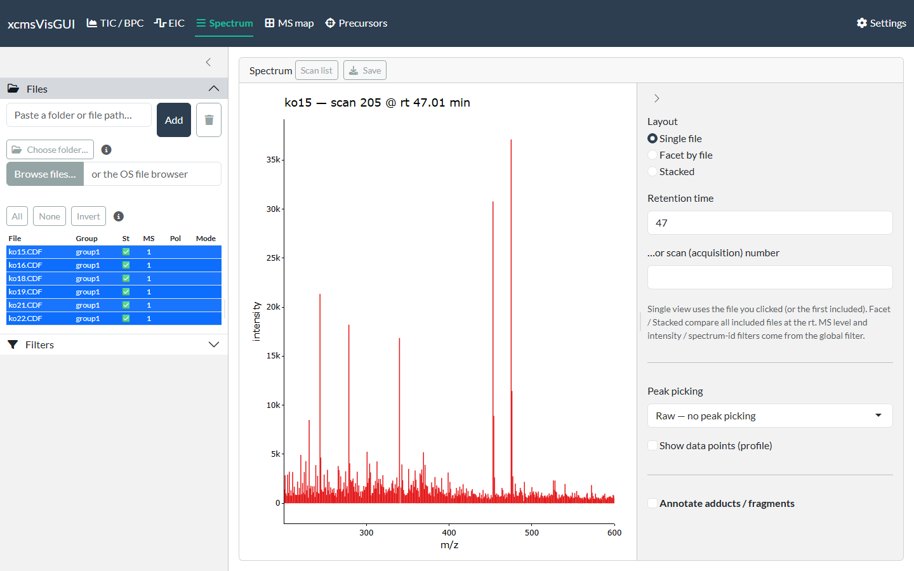
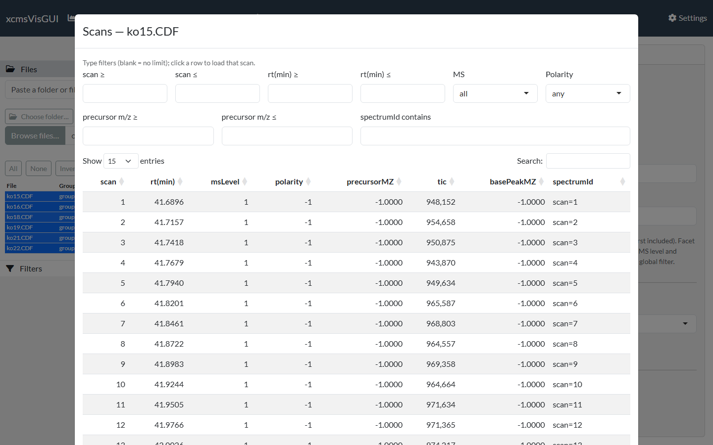
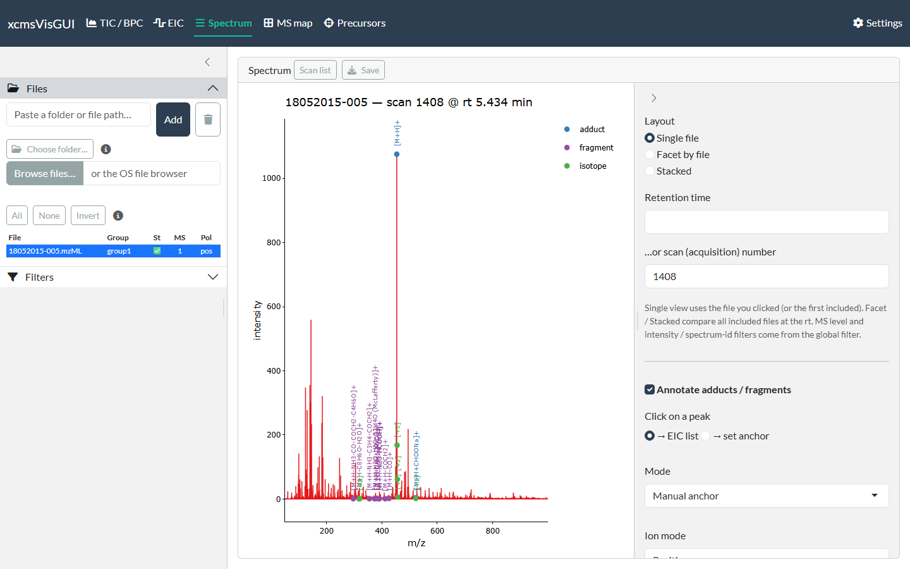

The Spectrum tab shows the mass spectrum at a chosen retention time or scan, with optional adduct / isotope / fragment annotation.

Choosing the spectrum
- Arrive by clicking. Clicking a trace on the TIC/BPC or EIC view, a pixel on the MS map, or a point on the Precursors view fills in the file and retention time here — so you usually reach this tab by clicking, not typing.
- Type a retention time, or an acquisition scan number (single-file view).
- Layout — Single file shows the file you clicked (or the first included); Facet / Stacked compare all included files at the same retention time.
The MS level / intensity / spectrum-ID Filters apply to which spectrum is shown.
From spectrum to EIC
Click a peak to add its m/z to the EIC target list (the default click action). Click the ions you want, then open the EIC tab to extract their chromatograms across files. (When annotation is on you can switch the click action to set anchor instead — see below.)
Scan list
The Scan list button opens a searchable table of every scan’s metadata (rt, MS level, polarity, precursor m/z, TIC, base peak, spectrum ID). Type in the filter boxes to narrow it, and click a row to load that scan into the view.

Annotating adducts, isotopes & fragments
Tick Annotate adducts / fragments (single-file view) to overlay adduct, isotope and in-source-fragment labels on the spectrum. The adduct/fragment dictionary comes from the commonMZ package; the ion mode defaults to the file’s polarity.

There are three modes:
-
Manual anchor — pick the peak you believe is a
known ion (default
[M+H]+/[M-H]-, selectable). Switch Click on a peak to → set anchor and click the peak, or type its m/z. The neutral mass is derived from it and every adduct and in-source fragment (from commonMZ; the[M+H-H2O]+water-loss ladder, etc. — toggle with In-source fragments) is projected; matched peaks are labelled, and their isotopes (up to Max isotope M+n) are detected and labelled[+1],[+2], … An isotope peak is never also labelled an adduct/fragment. This is the most reliable mode — you decide the molecular ion, avoiding false hits on noisy raw data. -
Auto-suggest (findMAIN) — uses InterpretMSSpectrum
to rank candidate molecular-ion hypotheses (by explained intensity, mass
error and isotope support). Hypotheses include the water-loss ion
[M+H-H2O]+: if the base peak is itself a water loss, that is the right call and the neutral mass is derived from it (so[M+H]+is then annotated at base + 18). Press Suggest molecular ion; the top-scoring hypothesis is annotated immediately — click another row to switch. (Auto mode has no manual anchor box.) - Difference network — annotates pairs of peaks whose m/z difference matches a known adduct/fragment, with no anchor needed (e.g. a ladder of water losses). Its match window is your instrument’s mass accuracy at the two peaks, so set the tolerance to fit the instrument and raise the minimum intensity to drop noise pairs. Isotope-spaced differences are ignored.
The ± tol is the adduct/fragment match window (ppm or Da); Min intensity drops peaks below that fraction of the base peak before matching; Max charge limits the charge states projected; Annotate only top N peaks keeps the N most intense annotated peaks. Isotope tol (mDa) is a separate, usually wider window for the isotope spacing (MS2 isotope centroids drift off the theoretical spacing, and the error grows with each M+n step). Isotopes decrease in intensity assumes a falling envelope (true for most biological samples) — with it on, a heavier peak that is more intense is treated as a real loss (e.g. −H₂) rather than an isotope. Labels are written vertically and multiple hits on one peak are joined with “;”. Show expected-but-absent ghost ticks can be toggled. Annotations are part of the plot, so they carry through to exports.